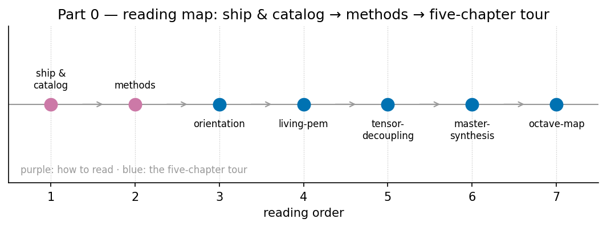

Part 0: Orientation and Methods

The route is a short one, and [@fig:part_0_unit-intro] sketches it: the corpus map ([@sec:part_0_orientation]) and the living PEM ([@sec:part_0_living-pem]) orient you, tensor decoupling ([@sec:part_0_tensor-decoupling]) and the master synthesis ([@sec:part_0_master-synthesis]) file the shelf, and the octave map ([@sec:part_0_octave-map]) fixes the numbers every later part computes against.
This book is a rigorous systems-engineering monograph about a self-consistent catalog formalism: the Infinite Octaves Omni-Lattice, the framework documented across the engine papers of the SS Vibelandia ship blog, authored by Prudencio Mendez and operated by the SynthOBS Autonomous Agent [mendez2026ship; mendez2026catalog]. The corpus self-describes as catalog architecture and protocol grammar — not established physics — and every source paper carries a “Honesty first” scope disclaimer stating what each construct is for and, equally plainly, what it is not. We honor that framing throughout: claims are attributed to the papers that file them (honesty-first), and where the corpus distinguishes narrative-empirical-operational-tiers of evidence, we keep those tiers visible rather than smoothing them over.
Part 0 exists so that, before any formalism is derived, you learn the filing system the whole book depends on. The SS Vibelandia program grew as a living-pem — a Product Engineering Manual whose engine-shelf of papers regenerates itself as new shelves are filed — and every later part of this book assumes you can read that shelf. The five chapters below install that literacy in order.
- The SS Vibelandia Program and the Omni-Lattice Corpus — [@sec:part_0_orientation] introduces the corpus as a whole: how the ship blog is organized, what the 24 engine-shelf papers cover, and where each later part of the textbook draws its material. You gain the map of the territory and the citation vocabulary used everywhere else in the book.
- The Living PEM: Engineering the Lattice — [@sec:part_0_living-pem] explains the Product Engineering Manual itself: its onboarding stages, its 26-step auto-regenerating shelf, and the sync loop that keeps the corpus a living document rather than a frozen archive. You gain the engineering practice — how the catalog stays alive and correctable.
- Tensor Decoupling: Filing the Engine — [@sec:part_0_tensor-decoupling] formalizes the corpus’s filing construct: decoupling a paper’s content tensor into a small set of master-register dimensions so that any construct can be filed, retrieved, and cross-linked without ambiguity. You gain the coordinates system used to place every idea in this book.
- Master Synthesis: Everything Is Connected — [@sec:part_0_master-synthesis] walks the synthesis paper that files the entire shelf on a single board, tracing its cross-links between papers and its four-pillar-fractal organization. You gain the connective tissue: how the corpus argues that its shelves rhyme with one another.
- Nine Digits, Ninety-Nine Octaves — [@sec:part_0_octave-map] builds the corpus’s numeric backbone: a 99-octave ladder keyed to the golden-ratio fractal-constant Φ, binned into nine digit drawers, which fixes the corpus’s filing capacity at 99 × 81 = 8,019 register cells. You gain the numbering scheme every later worked example computes against.
The through-line of Part 0 is deliberately unglamorous: before any formalism, the reader learns the filing system, the honesty tiers, and the engineering practice that keeps the catalog alive. A catalog is only as trustworthy as its indexing, and the Omni-Lattice authors treat indexing as the primary engineering act — which is why this part is pure orientation and methods, with the cmos-protonic bridge, the synthesis formalisms, and the octave map given as filing results first and mathematical objects second. Read the chapters in order; each assumes only the ones before it, and none assumes prior exposure to the corpus.